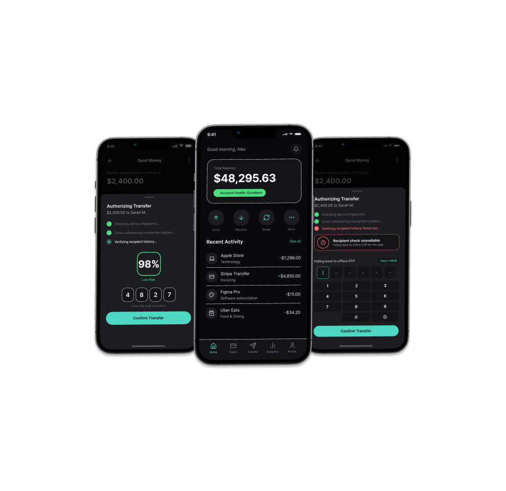
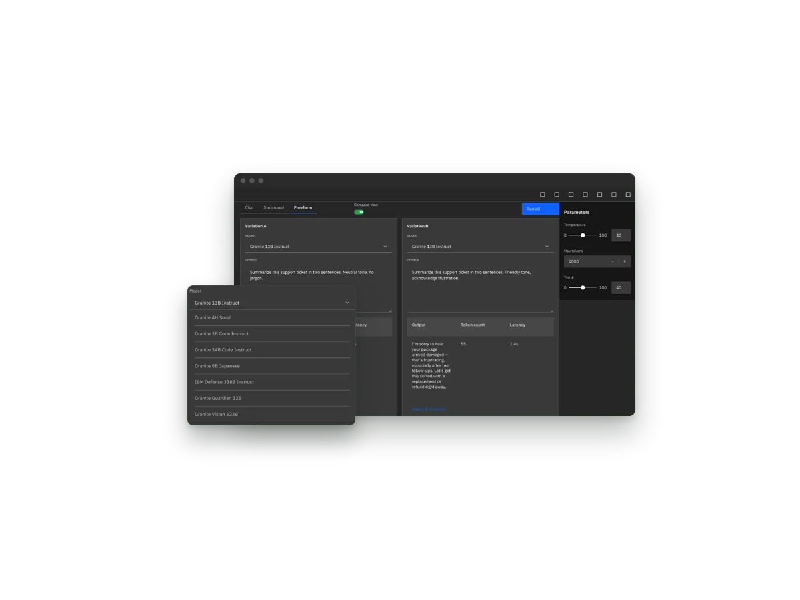
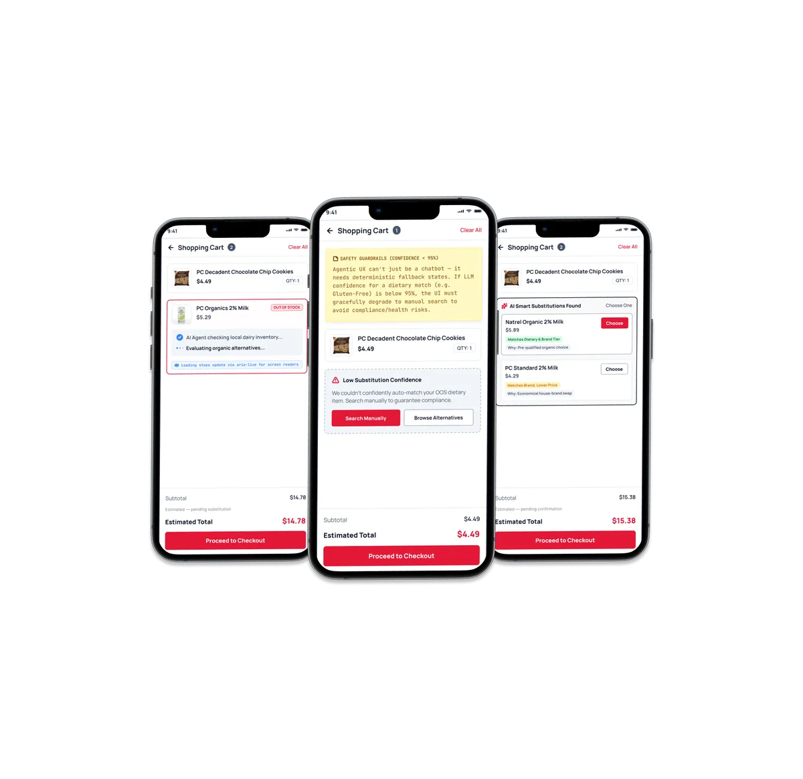
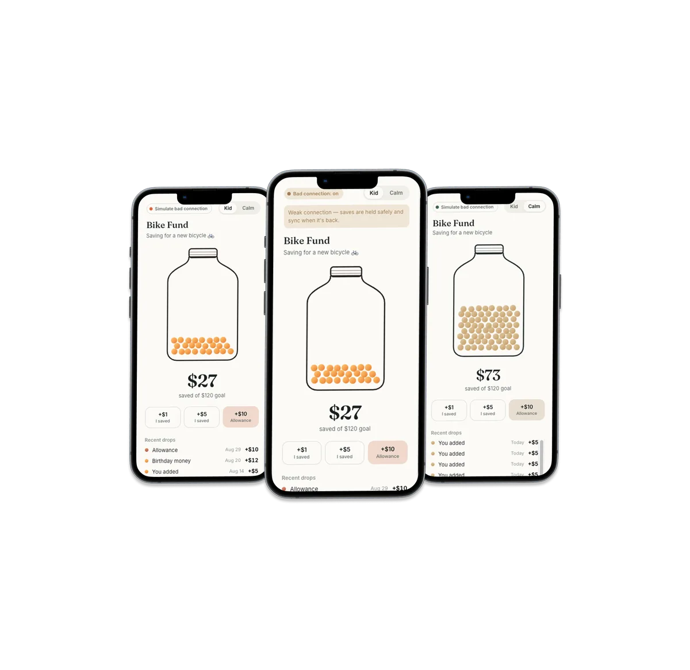

Self-initiated concepts. Each one is built around a trade-off I chose to explore.

Real-time AI fraud checks layered over offline one-time passwords.

A side-by-side compare view, built with the Carbon Design System.

AI cart replacements designed around latency, trust and fallbacks.

A physical metaphor for saving money, coded as a working prototype.